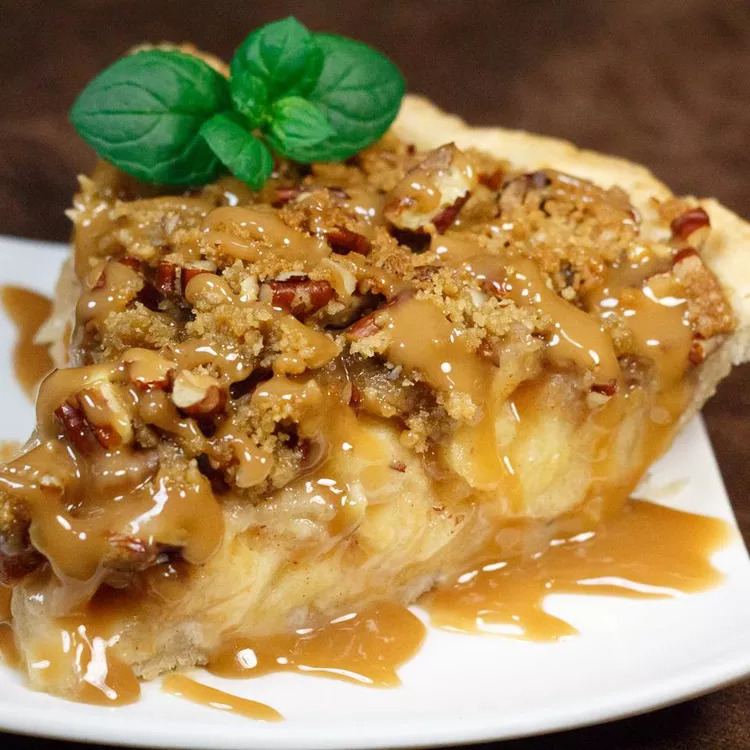

Apple Pie
Recipe by Lori Jett

This is the first on the dessert table to be devoured at any function or festivity!
I made this up from a pie I had eaten at a restaurant years ago.
This recipe makes two deep dish pies.
Ingredients
- 2 ounces of butter
- half a cup of packed brown sugar
- half a cup of all-purpose flour
- 1 cup of chopped pecans
- 9 apples - peeled, cored and sliced
- quarter of a cup of white sugar
- 1 teaspoon of ground cinnamon
- 2 unbaked pie shells
Directions
- Preheat oven to 350 degrees F (175 C).
- Prepare the topping by combining the butter, brown sugar, flour and chopped pecans. Cut in all ingredients with
pastry cutter until pea-sized. Set aside.
- Combine the apples, sugar, flour and cinnamon. Toss gently together and set aside.
- Place apple mixture in unbaked pie shells. Heap the apples up high in each shell and fill completely. Sprinkle
topping on top of each.
- Bake at 350 degrees F (175 degrees C) for 50 minutes. Do not allow topping to get too dark.